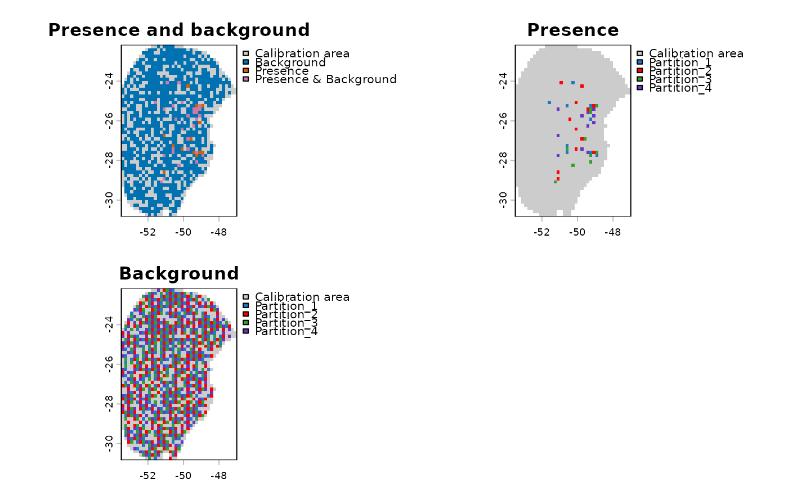
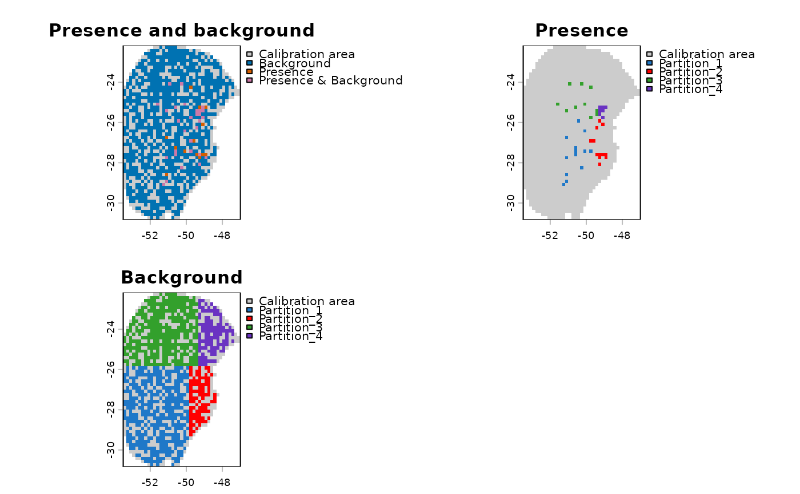

Replaces the test partitions in a prepared_data object with spatial
partitions generated by ENMeval or flexsdm.
Usage
replace_partition(
data,
new_block,
block_source = c("ENMeval", "flexsdm"),
enmeval_occs = NULL,
enmeval_bg = NULL,
tolerance = 1e-08
)Arguments
- data
A
prepared_dataobject returned byprepare_data(). It must containcalibration_dataanddata_xy. The latter is available whenprepare_data()is called withinclude_xy = TRUE.- new_block
A partition object. For
block_source = "ENMeval", it must containoccs.grpandbg.grp, as returned byENMeval::get.block(). Forblock_source = "flexsdm", it must contain apartdata frame withx,y,pr_ab, and.partcolumns, as returned byflexsdm::part_sblock().- block_source
The package that generated
new_block:"ENMeval"or"flexsdm".- enmeval_occs
The occurrence table supplied as
occstoENMeval::get.block(). Required whenblock_source = "ENMeval". It must have numericxandycolumns and retain the original row order.- enmeval_bg
The background table supplied as
bgtoENMeval::get.block(). Required whenblock_source = "ENMeval". It must have numericxandycolumns and retain the original row order.- tolerance
Maximum absolute difference allowed between corresponding coordinate values during validation. Set to
0to require exact numeric equality. Defaults to1e-8.
Details
The function checks that coordinates match in the same row order before replacing the partitions.
For ENMeval, occurrence records must precede background records in
data$calibration_data. The function compares enmeval_occs and
enmeval_bg with the corresponding rows of data$data_xy separately.
For flexsdm, the function compares the coordinates and occurrence/background
labels in new_block$part with data$data_xy and
data$calibration_data$pr_bg, respectively.
The returned object has updated part_data, partition_method, and
n_partitions components.
Examples
# Load prepared data
data(sp_swd, package = "kuenm2")
# Load environmental raster layers
var <- terra::rast(system.file("extdata", "Current_variables.tif",
package = "kuenm2"))
# Use a spatial block partition from flexsdm
# Load example output from flexsdm::part_sblock()
data(flexsdm_block, package = "kuenm2")
# Replace the existing partitions
d_flexsdm <- replace_partition(
data = sp_swd,
new_block = flexsdm_block,
block_source = "flexsdm"
)
# Explore the partitions in geographic space
pbg_flexsdm <- explore_partition_geo(d_flexsdm, raster_variables = var)
terra::plot(pbg_flexsdm)

# Use a spatial block partition from ENMeval
# Load example output from ENMeval::get.block()
data(enmeval_block, package = "kuenm2")
# Supply the same occurrence and background points, in the same order,
# that were used to generate the ENMeval blocks
occs <- sp_swd$data_xy[sp_swd$calibration_data$pr_bg == 1, ] # Occurrences
bg <- sp_swd$data_xy[sp_swd$calibration_data$pr_bg == 0, ] # Background
# Replace the existing partitions
d_enmeval <- replace_partition(
data = sp_swd,
new_block = enmeval_block,
block_source = "ENMeval",
enmeval_occs = occs,
enmeval_bg = bg
)
# Explore the partitions in geographic space
pbg_enmeval <- explore_partition_geo(d_enmeval, raster_variables = var)
terra::plot(pbg_enmeval)
